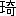

杭州西湖のなかほどに、一隻の画舫が浮んでいました。三月中旬のことで、湖岸の楊柳はもうそろそろ柔かな若葉をつづりかけていましたが、湖の水はまだ冷たく、舟遊びには早い季節でありました。通りかかりの漫遊客が、季節かまわず舟を出すことはよくありました。けれども、いま、この画舫は、そうした旅客のものではなく、名所を廻り歩くこともせず、長い間湖心にただよっていた後、東の岸へ戻って来ました。
船着場へつきますと、画舫から、陳家の子供である姉弟の瑞華と文とが、元気よく飛び出してきました。次に、上海から此処の別荘に来てる張金田が、肥え太った姿を現わしました。そしてあとがちょっととだえました。張金田は振向いて、舟の屋形の下を覗きこみました。
舟の奥から、静かな声がしました。
「ちょっと、片づけものをしまして、じきに参ります。子供たちへお約束の品を買って頂いてますうちに、お先に宅へ戻っておりますから……。」
そして張金田と二人の子供とは、町の方へなにか買物にやって行きました。舟には、子供たちの母親の陳秀梅と女中の※［＃「槿のつくり」、84-下-2］香とが残りました。
陳秀梅は席にじっと落着いたまま、火桶に片手をかざして、船頭の方を眺めました。二十七八歳の青年で、画舫の水夫としての普通の身装ですが、眉秀でて口元が緊り、頼もしい精神力を偲ばせる顔立でありました。
「あんたが、李景雲さんですか。」と秀梅はいいました。
突然、丁寧に呼びかけられて、青年は棒のようにつっ立ちました。
「あんたのことは、うちの徐康から聞いて、よく知っています。もとは立派な家柄だったとか、そして、室にはいろいろな書物が一杯並んでおり、頭にはいろいろな知識を一杯つめこんでいなさるとか、聞きました。だけど……。」
秀梅の頬からやさしい微笑が消えて、真面目な色が眉根に寄りました。
「そういうことよりも、わたしはなんだか、あんたをじかに、よく識っているように思えますが……。」
「私もよく存じあげております。」と李景雲はいって、なぜか、顔を赤くしました。そしていい添えました。「陳家の奥様のこと、よく存じあげております。」
「いいえ、そういうことではありません。」と秀梅は押っかぶせていいました。「じかに、どこかで、よく識っているような気がしますが……。」
李景雲はうつむいて立っていましたが、呟くようにいいました。
「初陽台でございました。」
「初陽台……。」
秀梅はそう繰返して、じっと李景雲の顔を眺めました。
「覚えていますか。」
「はい。」
李景雲はまた顔を真赤に染めました。
秀梅はそれきり口を噤んで、眼をそらしました。静まり返った湖水の面は、青空を映し、午後の陽光を孕んで、生き物のように輝いていました。
食器の類を取りまとめていた※［＃「槿のつくり」、85-上-18］香に、秀梅はきっぱりいいつけました。
「わたしはも少し遊んでゆくから、お前さんは先に帰って晩のお料理の仕度をみてやりなさい。」
そうして、※［＃「槿のつくり」、85-上-22］香を先に帰しまして、秀梅はまた舟を少し出させました。卓子の上には、茶菓が残されていました。その蓮の実の菓子を彼女は一つつまんで、真白な小さな歯先でかじりながら、右手の方、初陽台のある山の峰を眺めました。李景雲は静かに舟を漕ぎました。
こうしたことは、陳家の夫人としては、少し我儘すぎる行いでありました。殊に、まだ三十五六歳ほどの若い美しい未亡人としては、そうでありました。けれども彼女には元来、世の中のことに無頓着な一面が少しくありました。
陳氏が亡くなったのは五年前のことですが、秀梅はずっと子供達相手に暮してきました。店のことや財産のことは忠実な老僕の徐康に任せきりで、どんな相談をもちかけられても、殆んど考えもせずに一任するのでした。そして彼女は次第に柔かな肉が増してき、挙措動作がなよやかになり、顔には瑞々しい色艶があふれてきまして、未亡人になって初めてその美貌が人目につくようになったのでした。けれども、彼女自身ではそういうことも全く問題でないらしく、いろいろ人の噂に上りながら、再婚の気持など更になく、子供たち相手にのんびりした日々を過し、奥向の家事を取締ってるだけでありました。そしてただ時々、気まぐれなことをしました。家には立派な料理人がいますのに、娘の瑞華と二人きりで、町の騒々しい料理屋に食事をしに行くことがありました。侍女も連れずに一人で、湖岸の散歩にぶらりと出かることがありました。日常の交際では、相手を選り好みすることが全くなく、どんな悪評のある人が訪れてきても、にこやかに応接しました。
ところが、人々をそれとなく帰して一人で李景雲にまた画舫を出さしたことのうちには、なにかただの無頓着さとは異ったものがあるようでした。彼女は蓮の実の菓子を二つ三つかじりながら、いつまでも無言のままでいました。
湖の北岸の葛嶺の頂きにある初陽台は、眺望絶佳の場所とされています。夏には遊歩の人が多くあります。けれども、旧暦十月朔日の未明、此処から東天を眺めるがよいといい伝えられております。日の出に際して光茫充満し半天赤くなるともいわれていますし、或は日月並び出るのが見られるともいわれています。新暦元旦の早朝に登って、初陽に祈念する人もあるそうです。
この元旦の未明、陳秀梅はただ一人で、何故か明らかではありませんが、初陽台に登ったのでありました。そして日の出を待ちましたが、ただ仄かな白みが東天に漂ってる気配きりで、空は一面に茫と曇って寒冷な大気のなかに、霧とも雨ともつかない針のようなものが、ちらちら飛び交うのが感ぜられてきました。四五の人影が、無言のうちに山を下ってゆきました。秀梅も下り初めました。
小径はうねりくねって、石段や敷石が交錯していました。多くの沓に擦り磨かれたその石の上の、薄暗がりのなかで、秀梅の凍えた小さな足は滑りました。彼女は横向きに膝をつき、左手の甲をすりむき、右手で地面に身を支えました。そしてちょっと息をついています時、後ろから、若い逞ましい男の腕が、彼女を援け起してくれました。彼女はくっきりと身を包んだ外套の中から、そして頭からすっぽりと被った面帛の中から、低い声で御礼をいいました。若い男はただ、早くお帰りなさるがよろしいとだけいいました。そして二人はそのまま、彼女はその柔かな体重を彼の腕に半ば託し、彼はそれを支えながら確かな足取りで、薄暗い石道を辿ってゆき、途中の亭閣に憩いもせずに、湖岸まで下りてきました。
雨は降りませんでしたが、風もなく、ただ仄白い夜明けでした。秀梅はそこに立止って、面帛を半ばかかげて相手をすかし見ながら、静かな声でいいました。
「わたしは陳秀梅という者であります。明日お午に、あらためてお目にかかりたいと存じます。お待ちしておりますから、お出で下さいませんでしょうか。」
「有難うございます。御用の時には伺わせて頂きます。」
どうとも取れるその言葉を残して、若者は丁寧にお辞儀をして、すたすたと歩み去って行ったのでありました。
秀梅はそっと家へ戻りました。女中の※［＃「槿のつくり」、86-下-11］香だけが、彼女の左手の擦り傷は戸外でなされたことを知りました。
秀梅は若者の来訪を待ちました。然し若者は訪れて来ませんでした。その若者が画舫の李景雲だったのであります。
ひたひたと、物静かな水音をたてながら、画舫は湖心の方へ出てゆきました。
やがて、陳秀梅は急に気付いたかのように、李景雲に漕ぐのを止めさして、席近くに招きました。彼女の顔には、おっとりとしたやさしい笑みが浮んでいました。
「あの翌日、なぜ来ませんでしたか。待っていましたよ。」
景雲は顔を赤らめて、つっ立っていましたが、ようやく答えました。
「御用のある時に伺うつもりでございました。」
「そう……たしか、あの時も、そういうことをいいましたね。まあ、そこへお坐りなさい。」
景雲はもじもじしていましたが、うつ向けた眼に、秀梅の小さな足先が見えますと、それを避けるように、すぐ席に腰をおろしました。
「あんたのことは、徐康からいろいろ聞いて知っています。徐康はお父さんと懇意だったそうですね。お父さんが亡くなってからも、時々徐康に逢いますか。」
「いいえ、めったに逢いません。」
「いま一人きりだそうですね。」
「はい。」
「淋しいでしょうね。」
景雲は頭を振って、初めて落着いた青年らしい微笑をしました。
「初陽台なんかへ、時々登るのですか。」
「いいえ、登りません。」
「では、元旦の朝、どうして登ったのですか。」
景雲は急に、淋しそうな眼付をしました。そしてちらと秀梅の顔を見てから、答えました。
「私はあの時、いろいろなことを考えあぐんでおりました。その思想上の悩みのために、日の出を見たい気持になりましたのです。」
「そう、考えあぐんだから、日の出を……。」
秀梅はやさしい眼を見張って、怪訝そうに首を傾けました。景雲はふいにいいました。
「それでは、奥様は、どうしてあのような所へお登りなさいましたのでしょうか。」
「わたしはね、いろいろ考えなければならないことがありました。それを、ちっとも考えないようにするため、日の出を見たくなったのですよ。」
こんどは景雲が、怪訝そうに眼を見張りました。そして二人の眼が暫く合った時、秀梅はふいに、にっこり笑いました。
「つまり、どちらも同じことのようですね。」
景雲の頼に、熱い色がのぼりました。
そして暫く黙っていますと、秀梅は、蓮の実の菓子をつまみ、その鉢を景雲の方へも差出しました。景雲はびっくりしたように腰をあげて、秀梅へ茶を汲んでやりました。秀梅はその茶をすすりながらいいました。
「用があれば家へも来ると、あんたは約束しましたね。」
「いえ、約束などではありません。いつでも伺います。」
「それなら、これから時々来て下さいよ。あの時の御礼に……といっては変ですけれど、いろいろお頼みしなければならないこともあります。わたしはあんたを信じています。また、わたしに出来ることなら、何でもしてあげますから、相談して下さいよ。」
景雲はじっと頭を垂れて、涙ぐんでしまいました。
「ただ一つ、心に置いといて貰いたいことがありますのよ。」
と秀梅はいいました。
その秀梅の話というのが、景雲には全く意外なことでありました。張金田に関することでありました。
張金田は陳家の姻戚に当る人で、もと杭州の出でありまして、現に杭州に別荘も持っていますし、陳家とはごく親しい間柄でありました。上海で、おもに雑貨の貿易品を取扱っているとのことでしたが、いろいろな方面に関係しているらしく、その仕事の本体は曖昧だとされていました。大変富裕らしく見せかけていましたが、実は、陳家からも数万の金を引出して、そのままになっておりました。その張金田が、昨年の暮に、妙な手紙を陳秀梅に寄来しました。――娘の瑞華ももう十六歳になるのだから、来年は結婚のことをよく考えてもよかろう。丁度よい相手が上海にいるし、場合によってはこの金田が貰ってもよろしい。また秀梅自身も、若いのにいつまでそうしてもおられまいし、何とか考えを変えるべきであろう。それに現在のままでは将来のことも案じられる。陳家に出入の人々のうちには、財産や婦人を求める眼色も相当に多いと聞く。兎に角万事のこと、来年の春そちらへ出向く折に詳しく相談したい。――そういう意味の突然の手紙でありました。冗談と露骨さとの入り交った、真意の掴めないものでありました。
陳秀梅はその手紙に相当悩まされました。殊に、いろいろ貪慾な眼を周囲に感じることもありましたので、最後の項には心を刺され［＃「刺され」は底本では「剌され」］ました。けれどもこういう事柄については、一家のうちに適当な相談相手も見付かりませんでしたし、財務に忠実な徐康とても、女の心情には思いやりの少い老人に過ぎませんでした。そして何よりも不安なのは、当の張金田自身が何のために右のような手紙を書いたのか、それが分らないことでありました。もう四十歳にもなって独身でいる彼、数人の妾がいるとかいう彼、仕事に曖昧な影の多い彼、どんなことを企らんでいるか分りませんでした。
そしてこの三月になって、張金田は商用を兼ねて別荘にやって来ました。蘇州の絹布と麻布とのすばらしい刺繍［＃「刺繍」は底本では「剌繍」］の土産物を、秀梅と瑞華とに持って来ました。これまでに嘗てないことでした。けれども、手紙の一件については、彼は一言も口に出しませんでした。秀梅の方もいい出しませんでした。そこにまた、いつどんなことになるか分らない不安がありました。
李景雲はいつも、画舫好きな張金田に贔屓になっておりましたし、今日のように張金田が湖上でお茶の集りをするような時には、彼一人が呼ばれるのでしたから、彼にもし陳秀梅一家に味方してくれる心があるなら、張金田の真意もそれとなく監視し、なお今後とも力になってほしいというのでありました。
そういうことを、知性のすぐれた景雲には納得出来るほどのいい廻しで簡単に、秀梅は話しました。そして溜息をつきました。
「女の気持が分るような人は、世の中にめったにありません。」
黙って聞いていた景雲は、急に叫びました。
「私を信じて下さいますか。」
「信じますからこそ、こういう話をしました。」
「私は、何でも致します。あなたのためなら、どんなことでも致します。」
「誓って下さいますか。」
「誓います。」
秀梅は右手を差出しました。景雲はちょっとためらった後で、そこに跪いて、彼女の手を執って胸に押し当てました。それから跪いたまま椅子に半身を投げかけて、しみじみと泣きました。
秀梅はじっと宙に眼を据えていましたが、つと立上ってあたりを見廻しました。湖面はただどんよりと凪いで、湖心亭の小島の茂みが、もう長い影を引いていました。
それから一ヶ月あまりたちました或る日のこと、町の料亭の奥室で、盛宴が催されていました。張金田を中心に十数名の人々で、午後の三時頃から夜まで引続きました。初めは経済や政治の話題も出ましたが、夜になるにつれて人数も減り、三十年配から四十年配の者四五人となり、それがみな張金田の親しい飲み仲間ばかりでしたから、酒の酔につれて話も猥雑になり、やがて芸妓が呼ばれるようになりますと、一座はすっかり乱れてきました。宴席のそうした調子は、それがただ偶然の集りであることを示すものでありました。実際、その日の午過ぎ、この料亭で結婚式が行われまして、それに列した張金田は、式後、奥の室に陣取りまして、知人をやたらにそこへ引張り込んだのでした。彼はなにかしら、心が苛立ってるとも浮立ってるとも見えるのでありました。
室の床には、水瓜の種の皮や、向日葵の種の皮や、落花生の皮や、梅の実の種や、鶏の骨などが、あたりに散らばり、また誰かが結婚式の残りのものを持って来たと見えまして、五色の切紙やテープが散乱していました。夜の時間がたつにつれて、料理の皿は冷えてきましたが、老酒の銚子は熱くなりました。
そういうところへ、張金田からの使の者に呼ばれて、李景雲がやって来ました。彼は、一座の人々の着飾った様子と、室の乱れと、芸妓たちとを見て、入口に佇みました。
「いよいよ御入来か。」と金田が叫びました。「遅かったぞ。二度も使を出したぞ。さあこっちへ来るんだ。君を待ち焦れてるひとがいるんだ。」
彼は立上って来て、景雲の肩をつかんで室の奥に引張ってきました。
「どうなすったのですか。」と景雲はよろけながら尋ねました。
「どうもこうもない、今日は目出度い結婚式だ。」
「どなたの式ですか。」
「どなたもこなたもない。俺の…… 君の結婚式だ。そう、君と並んでみたいという者があるんだ。」
金田は一人の年若い芸妓を彼の側に引立てました。それには景雲も見覚えがありました。
 が少し尖った、身体の細そりとした、鶯妹というのでした。鶯妹はただ扱われるままになって、にこにこ笑い、おかっぱの前髪がゆらゆら揺れました。
が少し尖った、身体の細そりとした、鶯妹というのでした。鶯妹はただ扱われるままになって、にこにこ笑い、おかっぱの前髪がゆらゆら揺れました。「ははは、よく似合うぞ、そうしてるところを、あのひとに見せたいものだ。怒られるぞ、まあ一杯飲め。」
景雲はちょっと顔を赤らめましたが、平然と幾杯も飲みほしました。
ところで、こうした乱れた宴席では、言葉があちこちへ飛び、話題も飛躍するものでありまして、中心を捉えるのに困難でありますが、ただ、金田の酔った頭には、景雲のことがなにかひっかかってるようでありました。彼は景雲を一同に紹介するのに、これが例の画舫の哲学者だといいました。また或る所で景雲が述べたという説を披露しまして、その有名な言葉として、西湖を銭塘江岸へと展開させないところに杭州の頽廃がある、というのを伝えました。そこで、西湖の風光と銭塘江の風光との比較論がちょっと出ましたが、金田はもうけろりとして、景雲へ他のことを囁きました。陳家の信頼をあまり得すぎて、瑞華との結婚の話でも持出されたら、承諾する気があるかというのでした。
景雲はすすめられるままに杯をあけながら、答えました。
「あのひとと結婚なさるのは、あなたではありませんか。」
そしてすぐ彼は、ばかなことをいったと思って、自分の腿を強くつねって、その痛みに顔をしかめました。
金田は声高く笑い出しました。
「君は可愛いことを考えるね。鶯妹に好かれるだけあるぞ。……おい鶯妹、この人は君と結婚したいんだそうだ。もう今夜は帰すなよ。」
鶯妹はうなずき笑って、景雲の肩にもたれかかりました。そのゆらゆらした前髪に耳をなでられて、景雲はびっくりして立上りかけ、鶯妹は倒れそうになって飛び上りました。金田と他の妓たちがどっと笑いました。
景雲はすぐ、ばかなことをしたと思って、自分の腿を強くつねって、その痛みに赤い顔をしかめました。そして酒を飲みました。
他の一隅に、永遠に尽きない妻妾論が起っていまして、一体独身者は妾を欲するが故に独身でいるのか、或は妻を厭うが故に独身でいるのか、いずれが真実かという議論になりまして、その解決を金田の真意に問いかけてきました。それに対して、金田は他の答え方をしました。文化の高い民族ほど、女は年をとっても容姿が衰えないし、随って妾の必要は少くなるものだが、文化の低い民族ほど、女は年をとるにつれて早く老衰し、随って妾の必要が多くなるというのでした。それではこの国ではどうかということになりまして、この国では女は結婚するとすぐに婆さんになると、金田は断言しました。
「ただ、少数の例外はある。」と彼はいいました。「僕はその一人を知っているが、彼女はもう三十五六歳にもなるのに、水の滴るような容色をしている。それも、若い頃はさほど美人でもなかったが、年をとるにつれて美しくなってきた。全く異数の女だ。」
人々は意味ありげに眼を見合せました。
「その上、財産もあるというのだろう。」と一人がいいました。
「うむ、財産もある。」
「君に誂え向きだね。」とまた一人がいいました。
「惜しい哉、彼女は既に一度結婚したことがあるのだ。」と金田は答えました。
「それでは、妾の組だな。」と誰かがいいました。
「目下考慮中というところだ。まず乾杯しよう。」
一同は笑いながら乾杯をしました。
その時、乾杯に加わりながら、景雲はぱっと杯を床に叩きつけて砕きました。金田はじっと彼の方に眼を据えました。彼は即座に、強く自分の腿をつねって、その痛みに顔をしかめました。それが、何かの挑戦となったのでありましょうか、金田の拳が飛んで来て、彼の横面を一撃しました。彼はその痛みをもじっと怺えました。
金田の大きな顔が彼の眼の前に覗きだして、低く底力のある声でいいました。
「お前のような奴がいるから、俺はあのひとを保護してやらなければならないのだ。もうあの家へも出入を止めたがよかろう。」
そしてまた拳の一撃が彼の横面へ飛んできました。
彼は思わず立上ろうとしましたが、その時、金田の高い笑い声がしました。
「おい鶯妹、しっかりするんだぞ。この人は君から逃げ出そうとしてるぞ。首っ玉にかじりついて放すなよ。」
鶯妹も、ほかの妓たちも、びっくりして眺めますと、景雲はこまかく震えながら歯をくいしばっておりました。
「ははは、もう喜劇は沢山だ。」と誰かがいいました。「これで乾杯といこう。」
そして一同が乾杯をしています時に、李景雲は立上って室から出て行きました。
ただ不思議なことには、右のようなことが起った時、そしてその前後とも、陳秀梅の名前が誰の口にも上らなかったのであります。
その翌日の夜のことでありました。李景雲はただ一人、西湖の蘇堤を歩いていました。星辰清らかな夜で、月の姿は見えませんでしたが、湖面は仄かな明るみを湛えていました。景雲は多少の酒気を帯ているようでしたが、それよりも更に何か精神的な陶酔に陥っているらしく、足取りは弱々しいながら狂いがありませんでした。じっと眼を地面に伏せ、両手を胸に組んで、ゆっくりと歩きました。時々、頭を挙げて熱そうな頬を空に向け、星の光を仰いだり、胸の両手を伸ばして笛に打振ったりしましたが、またやがて専念の姿勢に戻るのでした。そして蘇堤の――端近くなると、くるりと向きを変えて引返し、他の一端近くなると、またくるりと向きを変えて引返しました。二キロに近いこの長い蘇堤の上を、こうして彼は幾度か往復しました。堤上の楊柳はしなやかな枝葉を張って、風もないのに、柳絮は時折彼の身に舞いおちました。
彼は何を思い耽っていたのでありましょうか。それを言葉に直してみますならば――
私の決心はもう定まっている。これ以外の決定はなし得ないところへまで、私は落ちこんでしまったのだ。いや、落ちこんだのではなく、自然に推移してしまったのだ。
ただ一つの私の悔いは、今日の卑怯な振舞であった。然し自然にも策略があるとするならば、この卑怯な振舞も一つの策略として許されるであろう。
昨日の夜、私は、数名の市人たちの面前で、そして数名の娼婦たちの面前で、即ち公衆のさなかで、辱しめを受けた。而もそれが私の恋人への侮辱によって、いや、私の恋愛への侮辱によって、為されたのである。
私はその辱しめのなかから、頭を垂れて出て来たのだ。
そして今日どうであったか。私は侮辱した当人の張金田を訪れて、その前に私は平身低頭して、詫言をいったのだ。心にもない嘘をいい、心の奥にあるものを口頭で否定して謝罪したのだ。陳秀梅さんに対する感恩のために、そして酒の酔のために、それが私の唯一の皮相な口実だったのだ。
卑劣な嘘言にひっかかる者に、災あれ。彼自身卑劣の外の何者でもないのだ。張金田は私の策略に陥って、更に私の献身や助力を求めようとした。私は誓った。おう、恥しくも誓った。真の誓いは真心の上にのみ打立てられることを知らない者に、災あれ。
張金田から誓いを求められたことによって、私は漸く自分の力を知った。ああこれを知ることの、も少し早かったならば……。
然しそれは、遅きに過ぎはしなかった。私は自分の力を知るに及んで、同時に、自分の恋の深さをも知ったのだ。
私は陳秀梅さんの前に跪いて、いつかの画舫の中でのように跪いて、告白したのだ、私はあの初陽台の時から、あなたを恋しておりましたと。
その時のあの人の蒼ざめた神々しい顔は、私の眼の中にはっきりと残っている。永久に残るであろう。だが私は、瞬間、それに堪えきれなかった。
私はあなたを恋しております。けれど、これは恐らく天上的な恋に終るでありましょう。私の恋も、またあなた自身も、或る貪慾な男によって辱しめられました。二三日黙ってお待ち下さい、すべてが明らかになりますでしょう。
それだけをいって、私は逃げ出したのだった。あの人は大凡のことを覚ったに違いない。然し必ずこれを持ちこたえてくれるに違いない。今となっては、あの人も私を愛してくれてることが明らかだ。愛は女の最強の支柱だ。
もはや私に残された途はただ決行のみだ。その他の途は凡て塞がれている。
それもよろしい。この土地に別れを告げることが、私の宿志ではなかったか。西湖を銭塘江岸へと展開させないところに杭州の頽廃があるとは、敵の口にまで上せられる私の持論だった。水浅く濁って、ただ水田の広いのに過ぎないこの西湖が、如何に三潭印月や湖心亭の影を宿そうとも、また、煙雨の中に模糊たる愁思を漂わそうとも、また、数々の名跡を周辺に鏤めようとも、畢竟は、湖底は寺院の香の灰に蔽われてるという巷説を、否定できるものではない。それは人を眠らせはしよう、人を憩わせはしよう。然し人を錬え生かすものとはならない。寺院と墓地と別荘と病院とが、更に更に殖えるもよかろう。私は別れを告げるのだ。
それにしても、私の心のこの愁いは何故であろうか。あの初陽台に登ったのも、訣別の意を固めるためではなかったか。あの人にあすこで出逢って、固より前から知ってる人ではあったけれど、心の出会をしたのは、私の不覚であったのだろうか。いやそれとも、ただ一途あるのみの最後の関頭へ私を逐いつめるための宿命であったとすれば、私はそれを欣んで受け容れよう。それこそ勇気ある者の
あの人は私の心の故里となるだろう。西湖は私の肉体の故里となるだろう。美しい故里を持つことを私の慰安としよう。前途に未知の荒波を持つことを私の勇気としよう。
そうだ、ただ僅な策略と小舟と一挙手とそれから脱走あるのみ。他は天の知るところである。
二日後のことでありました。西湖に主のない軽舟が漂っていて、その中に、背後から刃物で
 られた張金田の死体が見出されました。その後、李景雲の失踪が伝えられました。町にはいろいろな噂がたち、警察にはいろいろな情報がはいりましたけれど、犯人の確実な手掛りは得られませんでした。張金田は市外の墓地に葬られましたが、李景雲の行方は全く分りませんでした。
られた張金田の死体が見出されました。その後、李景雲の失踪が伝えられました。町にはいろいろな噂がたち、警察にはいろいろな情報がはいりましたけれど、犯人の確実な手掛りは得られませんでした。張金田は市外の墓地に葬られましたが、李景雲の行方は全く分りませんでした。そして一ヶ月ばかり後のこと、西湖の西方の山地にある名刹霊隠寺の御堂に、端坐して祈念してる美しい中年の婦人がありました。彼女は涙の中の長い間の祈念の後に、そのまま静かに立去ってゆきました。そして其処に、象牙細工の精巧な画舫の小さなのを、人知れず置き残しました。その婦人は陳秀梅でありまして、象牙細工の画舫は李景雲を偲んだのでありました。
その画舫にちなんで、かような伝説が綴られたのでありますが、李景雲の其の後のことは不明のままに致すより外はありません。